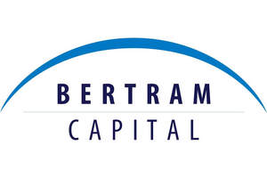

Trade Mark Journal No.2025/022 30 May 2025
UK00004172249 12 March 2025 (35,36,42,45)

- Class 35
- Advertising, marketing and promotion services; Business management consultancy; On-line advertising and marketing services; Development of advertising concepts; Search engine marketing services; Development of marketing strategies and concepts; Business marketing services; Advice in the field of business management and marketing; Providing marketing consulting in the field of social media; Providing business information in the field of social media; Business advisory and consultancy services; Business consultation services; Business strategy development services; Business management and consultation; Business management planning; Business management consultancy and advisory services; Consultancy services regarding business strategies; Business planning; Commercial administration of the licensing of the goods and services of others; Market research and business analyses.
- Class 36
- Financial investment services; Venture capital funding services for companies; Venture capital services; Financial consultation; Financial planning services; Investment management; Management of shares; Financial management of shares in other companies; Financing services; Financial analysis; Financial management; Funds investment; Management of investments; Asset management; Investment analysis.
- Class 42
- Design and development of computer software; Design, maintenance, development and updating of computer software; Software design and development; Computer programming and software design; Consultancy in the field of software design; Customized design of computer software; Design and development of software in the field of mobile applications; Design, creation, hosting and maintenance of websites for others; Graphic design services; Graphic arts design; Visual design.
- Class 45
- Consultancy relating to the licensing of intellectual property; Intellectual property watching services; Providing information in the field of intellectual property; Intellectual property consultancy; Intellectual property management services; Intellectual property consultancy services for inventors; Consultancy relating to intellectual property management.
Bertram Capital Management LLC
Representative: Mohak Aggarwal